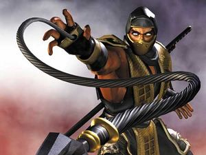
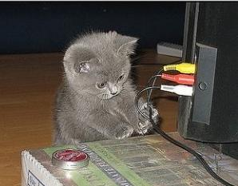
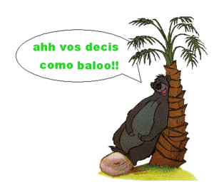
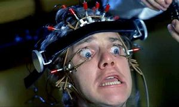
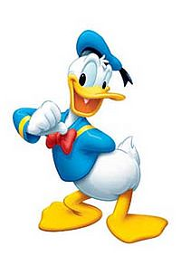

Mecatrónica
 De: La Frikipedia, la enciclopedia extremadamente seria.
De: La Frikipedia, la enciclopedia extremadamente seria.
Mecatrónica, también conocida como mktronik, significa Mortal Kombat Tronándote la caca KK, para empezar es una nueva ciencia impartida en algunos países como teletubilandia y Alemania, su método de estudio y evaluación no esta basado en exámenes y calificaciones; sino en un modelo de competencias (una estupidez alemana) donde el perdedor pierde porque no gana (es decir, o podes, ó no).
La mktronik es la unión sinérgica de un super nintendo y la mente siniestra de los delfines (expertos en mecánica, Electronica, sexología y los creadores de la lógica, fundadores de la empresa Midway y de la placa base) todos bajo el dominio secreto de macgyver quien mantiene la homosexualidad maldad de los demoniacos animales acuáticos esos controlada para evitar que destruyan y/o conquisten el planeta.
El fundador de esta mierda ciencia es el ilustre genio electrónico, mecánico, diseñador de programas lógicos y domador de delfines MacGyver , quien en realidad trata de salvarnos de múltiples delfines dictadores y el control mental del mitad silla de ruedas, mitad animal, mitad alíen, y mitad delfín, Stephen Hawking.

El, es el padre de la mktronik
calientes importantes de aquellas empresas que ingenuamente les contraten, la primera generación (los M-10 versión 1.0) esta formada por los mas pervertidos excelentes estudiantes seleccionados por una ruleta rigurosa prueba de la cual solo los que lleven dentro un gran hombre animo y determinación pueden pasar Mktroniko modelo "M-10 version 1.0
Como requerimientos para graduarte y entrar a tu nueva vida transexual profesional debes sobrevivir a todos los rounds de peleas entre tu y el profe de tu institución. En cada round se debaten tus ideas entupidas con las ideas (mas lógicas pero igual de entupidas) de tus profesores.
Por el momento es una nueva área de estudios por lo que solo existe una generación y la cual tiene recaídas momentáneas donde se emocionan con el mínimo Club de Ciencias para inadaptados que se les cruce por su jodida cara.
Aun no es una idea muy difundida a nivel mundial (ya que los delfines solo viven en el mar y no les gusta hablar con los humanos sobre sus ideas para dominar el mundo)
Ciencia y estudios
 He aqui el gato de
MacVerga MacGuiver
la mktronik como ciencia no tiene ni los huevos, pero esta fundamentada en 4 ramas de estudio universal y friki. Para un mejor entendimiento acerca de que tiene que ver con la ciencia, podemos mencionar que estudia o se fundamenta en el libro universal Kamasutra de donde obtenemos:
- La electricidad: consiste en meter tu polla en un toma corriente mientras tu pareja te chupa las pelotas
- Mil y una formas para mantener una velada electrizante
- Atracción de los cuerpos (como los opuestos se atraen y se pegan)
- Conexiones de elementos
- Cargas soportadas por los cuerpos: (que tanto resiste un elemento si se le pone una carga en la “herramienta”.
- Potencias (¿se mide en caballos de fuerza o en burros de fuerza?, que tanto se eleva un “elemento” en relación al otro)
- La mecánica incluye estudios sobre:
- Acción y reacción de cuerpos (cuando empujas, que tanto se goza y que tanta fuerza debes aplicar para elevar un cuerpo, como mantener un movimiento uniformemente acelerado)
- Fricción (que tanto se desgasta la "herramienta" durante la penetración)
- Penetraciones (forma, poses, ejemplos, etc.)
- Durezas (fuerzas necesarias para la perfecta "penetración" en un "cuerpo")
- Fluidos (clasificaciones, de donde provienen y porque, como obtenerlos mas fácilmente y de una manera mas placentera, como reacciona tu "herramienta" ante el contacto directo, como anular la introducción de ellos en el cuerpo)
- Computación las ventajas y la información mas variada y rica en ejemplos esta en la Web.
- Lógica computacional obviamente aquí se estudia el proceso mecánico de una forma mas detallada y lógica y se diseña un proceso mas “factible”
- Programación (como elaborar un programa que satisfaga los deseos de los participantes)
- Manejo básico de una computadora (como buscar "animaciones", objetos gráficos o "videos" que sirvan como ejemplo de procesos, como subir y bajar contenido para los adultos que quieran mas experiencia)
- Otros materias de base para todo lo que sea que se te ocurra hacer con tu vida
- Ingles (mil y una palabras para una ocasión especial: fuck me, more, ohhhhh, yeah, bitch, suck it, etc.)
- Ortografía Proviene del latin Orto-Grafia, grafia de escritura y Orto de culo, si eso mismo, tendras que aprender a escribir con un lapiz en el orto para dibujar garabatos que entiendan los demás técnicos o ingeniéros y/o/u frikis con un nivel maximo de inteligencia delfinesca
- Matemática
- Formulas simples de la vida cotidiana (1+1+un cuarto = 3 ó 2 y medio bodoque donde: el resultado es una variable indeseada, 1+1= 69, etc.)
- Grupos numéricos: 69, 669, 699, 71 (69 y dos dedos en el culo), 114 (tu y tu novia en un 69 + la 45mm de su padre, números romanos como XXX)
- Problemas Ecuaciones, felaciones, como suprimir resultados no deseados, como sacarle la hipotenusa a una mujer, ¿Qué es y donde encontrar el punto “G” con un sistema de coordenadas)
- Trigonometría como obtener el Senθ y el Cosenθ (para los que no hayan recibido esta materia esto se lee: “como obtener el seno de teta” y el Coseno de teta) donde el cuerpo que posee la variable teta (θ) posee un ángulo con una “abertura” relativo al opuesto a “ella” y su parte “adyacente”)
- Física (entre mejor el físico de los elementos que entran en una interacción mutua, se producen fenómenos mas felices)
Palabras técnicas
 Eh aqui los efectos de ponerse ebrio y cachondo a la vez
En esta ciencia solo se puede llegar a nivel de máximo gay ingeniero, o en un menor lugar, ser un técnico, como carrera técnica posee su vocabulario usado básicamente para entender las burradas de la ciencia en cuestión, para el mayor entendimiento de los lectores he aquí una lista de palabras o frases usadas para esta ciencia y sus significados:
- AHHHH, como baloo? Significa que quieres rascarte el culo con una palmera, es usada normalmente en la playa cuando te acabas de escapar de la explotación de tus profesores y estas tan ebrio que comienzas a bailar con una palmera, luego tus compañeros te dicen: baila como baloo (oso de una conocida película de Disney) y luego te raspas el culo contra la palmera.
- 16 pulgadas Significa que eres lomudo, si alguien lo usa para referirse a ti siéntete halagado.
Ejemplo:
-Un tipo cachondo dice: hey tu, el de las 16 pulgadas...
-Tu respondes: gracias, yo también te amo
- Lomudo Es el diminutivo de palomudo
- Palomudo Significa que tienes un pene enooooooooooooooorme
- Tengo caja de herramientas Significa que quieres llamar la atención o chuparle un huevo a un superior para ganarte su respeto o quedar bien, esta frase la usan algunos técnicos en esta ciencia para que los tomen en cuenta:
Ejemplo:
-superior a todo el q este presente: necesito un voluntario que me acompañe a revisar unas maquinas
-gilipollas (con la mano en alto):"yo, tengo caja de herramientas"
- Como se hace eso? Cuando es la base de una pregunta, significa que sos estúpido
- Quien soy yo? Si preguntas esto luego de que tus órdenes son asignadas, significa que la estupidez es tu MEJOR virtud
- Porque pensé esto? Significa que no tienes remedio, pégate un tiro o dile a jet lee que haga lo que tenga que hacer y muere con dignidad
- Empercutar Significa meter o entrar, o todo lo que tenga que ver con algo que estaba fuera de algo y luego esta dentro
- Sambutir sinónimo de empercutar
- MV2 Ecuación universal, mas comúnmente usada en esta carrera cuando te llevan a
un rincón los extremos de lo humanamente posible y tu dices: “Me Vale Verga” a lo que sea que te encomienden hacer
- Ya Esta palabra es muy frecuentemente utilizada en esta carrera (realmente muy utilizada) mientras hablas, como el molesto “de veras” que usa naruto al final de cada cosa que dice (“vaya que si” en la versión española), su significado varia según el numero de repeticiones en una frase:
Una sola repetición al final de cada frase significa: entendieron?
Ejemplo:
-Un alumno dice una mera gilipolles: uso el joggin?
-Profesor: no se llama jogging, sino relee, “ya”?
Dos repeticiones, significa que quieres tener relaciones sexuales con alguien
Ejemplo:
-tu a tu novia/o: si, hazlo pero “YA, YA” mi amor
(luego tu novia/o se quita la ropa y tienen sexo).
Muchas en una frase significa que se esta comunicando con los delfines vía bluetuff
Ejemplo:
-(ves que tu profesor se queda sin decir nada) telepáticamente dice: delfines, la hora ha llegado, venga YA, YA, YA!!!
- Gaaaaaaaaaaaaaaaaaaaaaaaaaaaaaaaaaaaaaaaaaaaaa es un sonido articulado por tus cuerdas bocales, es muy común que luego de pasar por tanta
pasión presión, tiendas delirar e inventar palabras sin sentido como esta, si lo haces significa que estas por entrar en coma, que te votaron de chiquito, que te estas pokemonizando o bien dependiendo de la ocasión o la circunstancia bajo la que estas:
- Si dices gaaaa, llegando a un cuarto significa: hola
- Si lo usas para contestar el teléfono: alo
- Si cuando te dicen algo, tu no le escuchaste y lo dices como pregunta (gaaaaa?): que?
- Cuando lo dices de repente, y sin razón:llamada de apareamiento (estas en celo)
Requisitos
Como todos saben, (menos yo) esta carrera es muy exigente en cuanto a la selección de los nuevos cyborgs y por tanto habrá que pasar una prueba (a parte de tener una mente a disposición de seres marinos super inteligente) o cumplir con ciertos requisitos.  El nuevo modelo de aprendizaje aleman
Un requisito básico para ingreso a esta carrera es tener un terabyte de memoria para malgastar 73 horas al día viendo la fea agradable cara de los malvados adorados profesores.
Otros requisitos para ser un aspirante a mecatrónica:
- No tener nada importante que hacer en el resto de tu vida
- Sufrir casos graves de masoquismo
- Querer cambiar tus preferencias sexuales
- Vivir metido en una biblioteca
- No temer a las cirugías de cambio de sexo
- No temer a pasar encerrado
- No temer a las vacas
- Asistir a
clases un aula para que te dejen tarea que no entenderás
- Saber, imaginar, soñar o asumir que serás capaz de pensar por ti mismo y sin el dominio mental de los delfines
- Tener un orgasmo cada vez que ves un torno cnc
- Tener hermanitos pequeños o animalitos (de preferencia delfines) para desahogar la demencia que adquirirás
- Asistir a todas las reuniones para darle en la madre a las ideas sicópatas de tus profesores
- Saber escribir
Requisitos menos importantes
- Obtener buenas calificaciones
Competencias a adquirir:
Una vez que has sido aceptado en la carrera de mecatrónica (luego de darte cuanta del huevo en el que te metiste) tendrás que adquirir a huevo las competencias , (competencia es lo que serás (en teoría) capaz de hacer cuando salgas libre graduado de la institución) que te exija la carrera, para darte una idea de lo que tendrás que afrontar, aquí te enlistamos una lista (wtf?):
- Hablar delfín
- Bailar con palmeras
- Poner en duda tu género sexual
- Ser una mini copia de
macgaver macverga macgyver
- Hacer una ultra con los ojos vendados mientras manejas un torno
- Sobrevivir sin ninguna laceración o mutilación
- Tomar 12 cervezas y saber disimularlo frente a tus profesores
- Tener caja de herramientas
- Ordeñar
- Asistir sobrio a una clase de lógica, o bien, mantenerte despierto durante la clase de lógica
- Asistir a clases de manejo de silla de ruedas para cuando te de un derrame de tanta presión y seas un Stephen Hawkins en miniatura y/o construir tu propia silla de ruedas
- Asistir a la terapia para dejar tus traumas adquiridos durante cada modulo
- Mecanizar tu mente
- Rectificar tu mente
- Pervertir tu mente
- Abrir tu mente
con una piedra y un buril
- Corromper tu mente
- Llevar la mecánica en las venas e ir al hospital luego de meterte refrigerante para torno en tus venas
- Soldar en su defecto puede ser:
- Soldar con/sin electrodo
- Con una vela y un fósforo
- Octógonalmente
- Ortogonalmente (con un electrodo en el culo)
- Soldar con electrodos de madera
- Soldar sin ropa
- Curar quemaduras por soldar sin ropa
- Serás capaz de crear agua en polvo (solo le agregas agua y listo)
Como saber si eres un mecatrónico nato
 Dicen que Donald es un mecatrónico nato
No cualquier gilipollas puede ser una maquina M-10 versión 1.0, "sabrás que estas apto para romperte la madre y desperdiciar tu vida en esta estupidez si:"
- Si pasas el 9999999.99999% de tu día en tareas y actividades de la carrera.
- Si recibís clases sin sentido como ingles, ofimática y la perdida mayor de tiempo "expresión oral y escrita"
- Si sabes el significado de la frase gaaaaaaaaa (ya antes la explicamos)
- Si una semana después de comenzar clases dijiste... mierda, en que huevo me metí?
- Si tienes un revergo de tareas y en vez de hacerlas te vas a dormir al auditorium o a la plaza mas cercana a tu instituto (incluye pizza games y chuckye chesee)
- Si tienes una leve esperanza de que vas a ir a brasil
- Si ya reconociste que no tienes posibilidades de salir en comerciales y publicidad porque ya sabes quienes caen ahí (a pesar de que solo pueden nadar)
- Si conoces o al menos has escuchado mencionar a carepinga (mas conocido como "care")
- Si no tienes idea de lo que significa el verbo pretérito pluscuamimperfecto quántico al cuadrado o la palabra sinérgico
Como saber si no soy apto para ser un mecatrónico
Una señal clara para dejar de intentar ser un Cyborg sin voluntad (mecatrónico) seria:
- Si a un simple relé (objeto Friki usado en carros y demás cosas tecnológicas) le llamas joggin (circuito que se forma usando el relé)
- Si a la tercera semana de clases eres emo y un día después ya no lo eres.
- Si eres emo
- Si nunca has ido a la cantina más cercana y ligado a la más chancrosa de ahí (derivado de chancro)
- Si te llaman por tu nombre original
- Si tienes un suéter que dice chocolate
- Si eres extranjero.... específicamente de Belice
- Si aun estas cuerdo y/o fuera del manicomio (si, donde creías que estoy?)
Mecatronicos más conocidos
Una lista de personajes que han sido mecatronicos alguna vez en su vida
- Bulma
- Macgyver
- Macdonals
- Yo
- Tu
- Baloo
- Yoyo
- Munra
- Santa Claus
- Stephen hawking
- Trunks
- El rey misterio
- Chris Jericho
- Terminator
- Optimus prime
- Anakin Skywalker
- Cualquier Delfín y su cría recién nacida
Que esperaban?, les dije que no era muy famosa la carrera no?
Autor(es):
- Krusher
- Roms
- Niko
- Khazike Khashondo
- Lljosemll
- Prototype
- Oskr1080
- Peter8
- Phelipe73
- Kojakilo
Frikipedia 2005-2016, Licencia
GFDL 1.2 - Extraído por FrikiLeaks